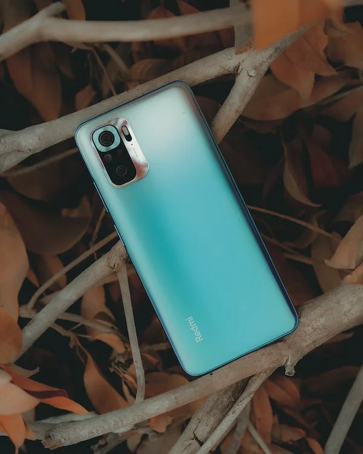

Xiomi

Xiaomi Corporation (“Xiaomi”) was founded in April 2010 and listed on the Main Board of the Hong Kong Stock Exchange on July 9, 2018(1810.HK). Xiaomi is a consumer electronics and smart manufacturing company with smartphones and smart hardware connected by an IoT platform at its core.
Embracing our vision of “Make friends with users and be the coolest company in the users’ hearts”, Xiaomi continuously pursues innovations, high-quality user experience and operational efficiency. The company relentlessly builds amazing products with honest pricesto let everyone in the world enjoy a better life through innovative technology.
According to Canalys, the company’s market share in terms of smartphone shipments ranked No. 3 globally in the second quarter of 2022. The company has also established the world’s leading consumer AIoT (AI+IoT) platform, with 526.9 million smart devices connected to its platform as of June 30, 2022, excluding smartphones, tablets and laptops. Xiaomi products are available in more than 100 countries and regions around the world. In August 2022, the company made the Fortune Global 500 list for the fourth time, ranking 266th, up 72 places compared to 2021.
Xiaomi is a constituent of the Hang Seng Index, Hang Seng China Enterprises Index, Hang Seng TECH Index and Hang Seng China 50 Index.